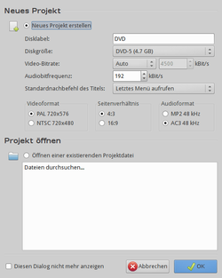
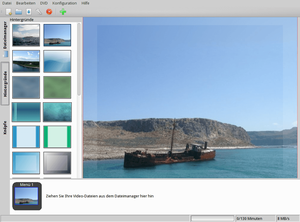
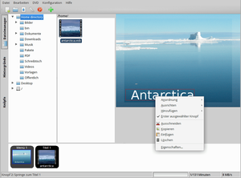
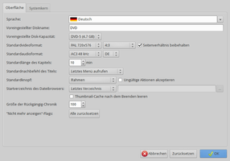
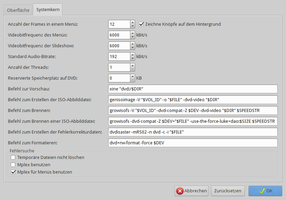

DVDStyler
Dieser Artikel wurde für die folgenden Ubuntu-Versionen getestet:
Ubuntu 14.04 Trusty Tahr
Zum Verständnis dieses Artikels sind folgende Seiten hilfreich:
DVDStyler  ist eine DVD-Autorensoftware, also ein Programm zum Erstellen von DVDs. Mit dem Programm können (nicht animierte) DVD-Menüs mit Hintergrund und Schaltflächen erstellt werden. Es steht neben Linux auch für Windows zur Verfügung.
ist eine DVD-Autorensoftware, also ein Programm zum Erstellen von DVDs. Mit dem Programm können (nicht animierte) DVD-Menüs mit Hintergrund und Schaltflächen erstellt werden. Es steht neben Linux auch für Windows zur Verfügung.
Installation¶
DVDStyler befindet sich bis einschließlich Ubuntu 15.10 in den offiziellen Paketquellen. Man installiert hierzu das Paket [1]:
dvdstyler (universe)
 mit apturl
mit apturl
Paketliste zum Kopieren:
sudo apt-get install dvdstyler
sudo aptitude install dvdstyler
Nutzer von Ubuntu 16.04 können auf ein PPA  ausweichen.
ausweichen.
Benutzung¶
 Anschließend kann DVDStyler bei Ubuntu-Varianten mit einem Anwendungsmenü über "Multimedia -> DVD Styler" gestartet werden [2]. Beim ersten Start des Programms wählt man die gewünschte Sprache der Benutzeroberfläche aus.
Die Oberfläche von DVDStyler ist sehr übersichtlich aufgebaut und das meiste ist selbsterklärend. Bei vielen Arbeiten kommt man am schnellsten mit dem Kontextmenü ( ) zum Ziel.
) zum Ziel.
Allgemeines¶
Standardmäßig ist der Arbeitsbereich mit einem unsichtbaren Gitter versehen, damit sich die einzelnen Objekte leichter anordnen lassen. Die Einstellungen des Gitters kann man verändern, indem man auf der leeren Arbeitsfläche den Punkt "Gitter" aus dem Kontextmenü aufruft.
Benutzt man öfter andere Objekte, als die von DVDStyler standardmäßig zur Verfügung gestellten, so empfiehlt es sich, diese in den entsprechenden Ordner abzulegen. Die Ordner für die Hintergründe und Symbole sind Unterordner des Programmordners. Dieser liegt nach der Installation unter /usr/share/dvdstyler.
Über das Kontextmenü "Eigenschaften" kann man bei allen Objekten wichtige Einstellungen vornehmen. Das ist oft der schnellste Weg, um dies zu erledigen und manchmal auch der einzige. Die Einstellungsmöglichkeiten sind je nach Objekt unterschiedlich.
Hintergrund wählen¶
 Um einen Hintergrund auszuwählen, wählt man den Reiter "Hintergründe" am linken Rand der Programmoberfläche. Standardmäßig bietet DVDStyler bereits eine ganze Reihe von Hintergrundbildern an. Man kann entweder eines davon benutzen, indem man es bei gedrückter Maustaste in den Arbeitsbereich auf der rechten Seite zieht (Drag & Drop) oder es über das Kontextmenü als Hintergrund zuweist. Alternativ kann man natürlich auch ein eigenes Bild benutzen. Dazu ruft man aus dem Kontextmenü den Punkt "Eigenschaften" auf. Es öffnet sich ein neues Fenster, in dem man verschiedene Einstellungen vornehmen kann; u.a. kann man auch den Pfad zu einem Hintergrundbild angeben, indem man auf den Knopf mit den drei Punkten klickt. Idealerweise sollte das Bild bereits eine Größe von 720 x 576 Pixeln haben, was der Standard-Auflösung einer PAL-DVD entspricht.
Schaltflächen einbauen¶
Wie von Kauf-DVDs gewohnt, soll man später auch bei den eigenen DVDs mittels Schaltflächen durch die Menüs navigieren und einzelne Menüpunkte anwählen können. Daher muss man das Menü zunächst mit solchen Schaltflächen ausstatten. Dabei kann es sich entweder um einfachen Text oder um Knöpfe in verschiedenen Formen (beispielsweise Pfeile) handeln. Auch hierfür bietet DVDStyler bereits eine Vorauswahl an, die sich über den Reiter "Knöpfe" am linken Rand des Programms benutzen lässt. Die Schaltflächen lassen sich einfach bei gedrückter Maustaste in den Arbeitsbereich ziehen und dort verschieben und vergrößern, indem man sie mit der Maus an eine andere Position zieht bzw. aufzieht.
Dateien zuweisen¶
Über den Reiter "Dateimanager" am linken Rand von DVDStyler kann man nun die Filmdateien auswählen, die auf DVD gebannt werden sollen. Die Dateien müssen dabei entweder im VOB-Format (DVD-Standard) oder mindestens im Format MPEG-2 vorliegen. Dateien in diesem Format erhält man beispielsweise beim Rippen von DVDs oder man kann sie mit einem Programm wie Avidemux erstellen. Über den Dateimanager navigiert man nun in das entsprechende Verzeichnis und zieht alle gewünschten Dateien mit gedrückter Maustaste nach unten in die Menüleiste. Hier werden sie in der Reihenfolge, in der sie hinzugefügt wurden, mit den Überschriften "Titel 1", "Titel 2" usw. versehen.
Menüs erstellen¶

Hat man alle zu brennenden Dateien hinzugefügt, so muss man festlegen, welcher Klick welche Aktion auslösen soll. Dies ist natürlich abhängig vom Menü. Über "Eigenschaften" aus dem Kontextmenü, kann man bei jedem Menü zunächst einstellen, um welche Art von Menü es sich handeln soll. Dazu setzt man einfach einen Haken bei dem entsprechenden Punkt. Außerdem kann man sog. Vorbefehle und Nachbefehle wählen. Diese geben an, was beim "Betreten" bzw. "Verlassen" des Menüs geschehen soll. Beispielsweise kann man durch den Nachbefehl jump menu 2; direkt zu einem anderen Menü springen.
Die Schaltflächen haben ähnliche Einstellmöglichkeiten wie die Menüs. Auch hier kann man festlegen, zu welchem Titel oder welchem Menü bei der Aktivierung der Schaltfläche gesprungen werden soll. Außerdem lassen sich noch die Farben und die Größe der Schaltfäche sowie deren Position verändern. Die Einstellungen sollten selbsterklärend sein. Für die Titel gelten die Einstellungen analog.
DVD brennen¶
Mit DVDStyler hat man die Möglichkeit, die Projektdatei im XML-Format (.dvds) abzuspeichern und direkt aus dem Programm heraus eine DVD zu brennen. Wie bereits gesagt, müssen die Videodateien dazu bereits in einem DVD-fähigen Format vorliegen. Um den Brennvorgang zu starten, wählt man entweder "Datei -> Brenne DVD" aus dem Menü oder man benutzt die entsprechende Schaltfläche in der Symbolleiste. Je nach verwendetem Brennprogramm, muss man nun in einem neuen Fenster noch einige Parameter festlegen.
Einstellungen¶
Die Programmeinstellungen sind in zwei Reiter aufgeteilt: "Oberfläche" und "Systemkern".
|  |
| Oberfläche |
|  |
| Systemkern |
Links¶
Dokumentation
in verschiedenen Sprachen
Fernseh-Archiv auf DVD – TV-Aufnahmen mit Menüs auf DVDs brennen
- EasyLinux, 04/2008DVD-Authoring
 Programmübersicht
Programmübersicht
- Erstellt mit Inyoka
-
 2004 – 2017 ubuntuusers.de • Einige Rechte vorbehalten
2004 – 2017 ubuntuusers.de • Einige Rechte vorbehalten
Lizenz • Kontakt • Datenschutz • Impressum • Serverstatus -
Serverhousing gespendet von